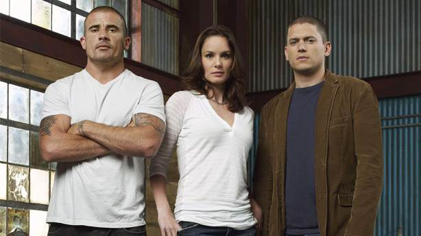

Merhaba ben Oktay ÖZ. Balıkesir'de yaşıyorum. Futbol izlemeyi çok severim. Genellikle Sherlock Holmes ve Futbolcu Hikaye kitaplarını okumayı çok seviyorum.
Kendimi Front End alanında kariyer yapmak istiyorum.
Kodluyoruz'un bu harika eğitim serisinde kendimi ileriye doğru gittiğime inanıyorum.
Prison Break: Büyük Kaçış, ABD yapımı bir aksiyon dizisi. Hikâyesi Paul Scheuring tarafından ortaya atılmış ve FOX şirketi tarafından 2005 yılında dizi olarak hayatına adım atmıştır.
